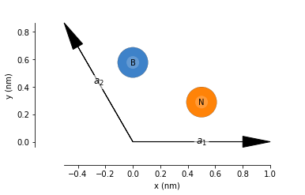
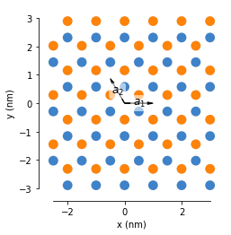
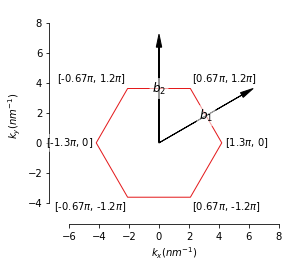
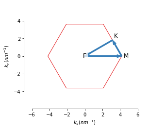

En este notebook realitze algunes gràfiques per a la presentació¶
Empre la biblioteca pybinding, pero no realitze cap càlcul amb ella, sols l’empre perquè facilita generar alguns gràfics
import pybinding as pb
from numpy import *
import matplotlib.pyplot as plt
#Empre coordenades reduides, tot dividit entre a
def monolayer_BN():
lat = pb.Lattice(a1=[1, 0],
a2=[-1/2, 1/2 * sqrt(3)])
lat.add_sublattices(('B', [0, sqrt(3)/3 ]),
('N', [1/2, sqrt(3)/6 ]))
return lat
lattice = monolayer_BN()
lattice.plot(axes="xy",vector_position=[0,0])

model= pb.Model(
monolayer_BN(),
pb.rectangle(6), # nm
pb.translational_symmetry(a1=False, a2=False)
)
model.plot()
model.lattice.plot_vectors(position=[0, 0]) # nm
plt.show()

lattice.plot_brillouin_zone(decorate=True)
plt.show()
plt.savefig("Zona_de_Brillouin.pdf")
plt.close()

Gamma = [0, 0]
M = [pi , pi/sqrt(3)]
K = [4*pi/3, 0]
solver = pb.solver.lapack(model)
bands = solver.calc_bands(Gamma, K, M,Gamma)
lattice.plot_brillouin_zone(decorate=False)
bands.plot_kpath(point_labels=[r'$\Gamma$', 'M', 'K',r'$\Gamma$'])
plt.show()
#plt.savefig("Cami_zona_de_Brillouin.pdf")
